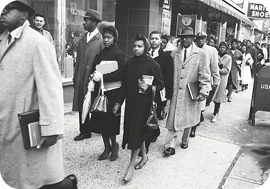

A History of Change
From the War of Independence to the Civil Rights Movement and Modern Day, South Carolina has been on the forefront for national issues and change on a political Scale. Our state can show our nations global change on different issues.